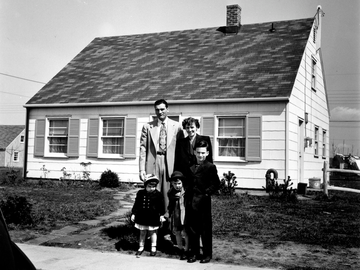
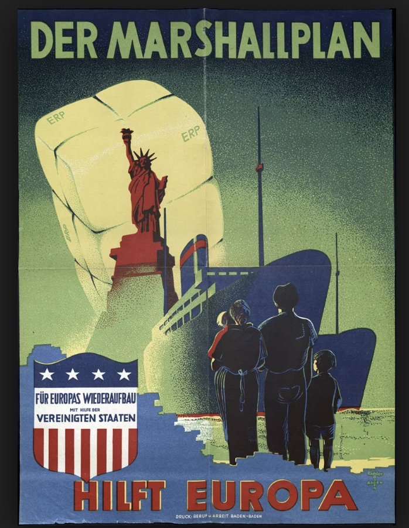
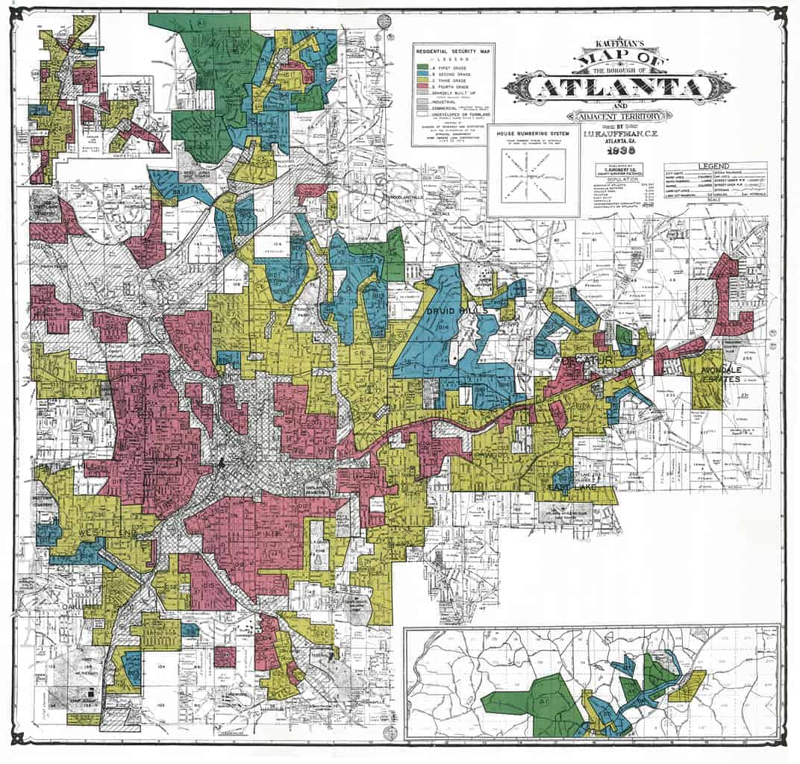
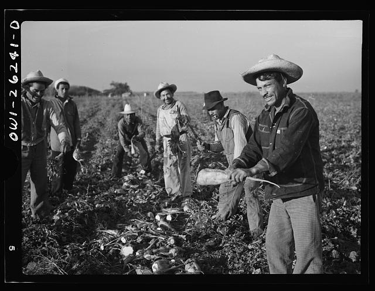
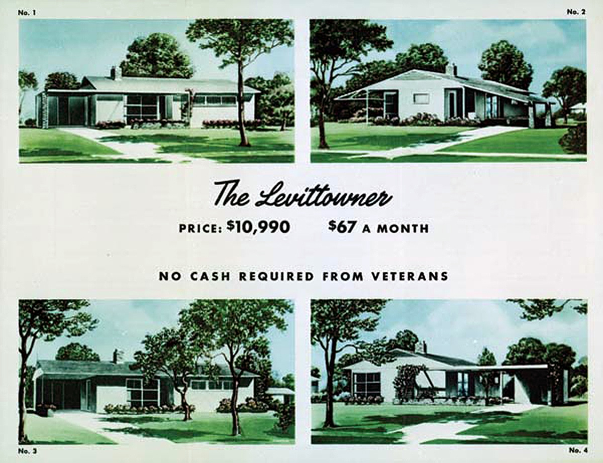
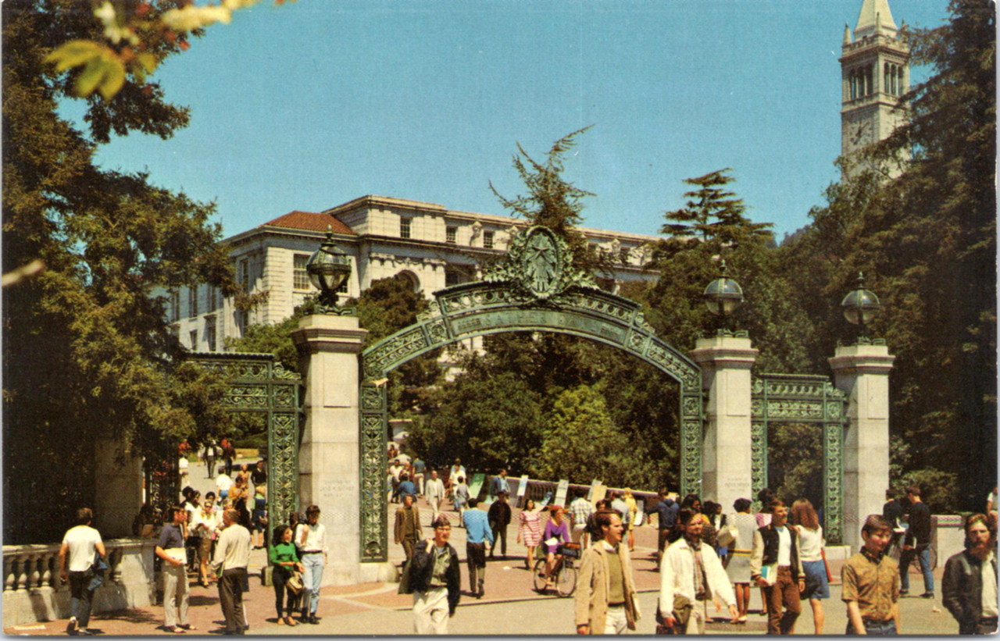
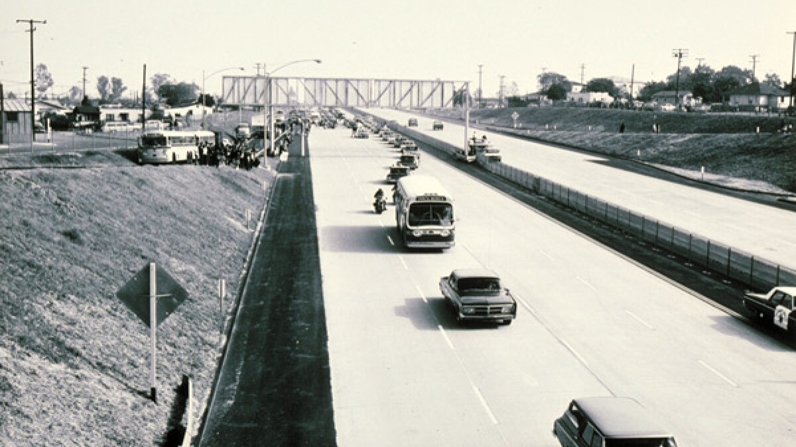
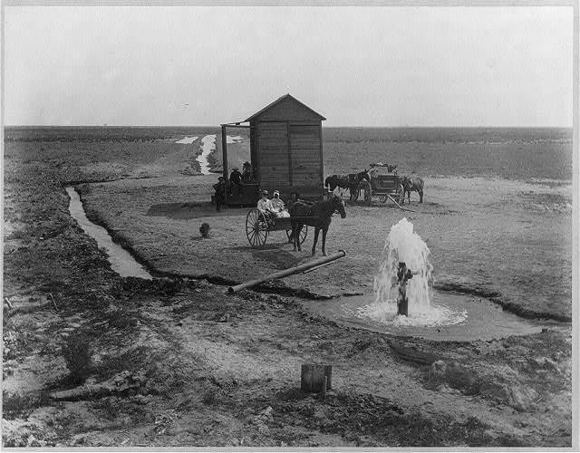
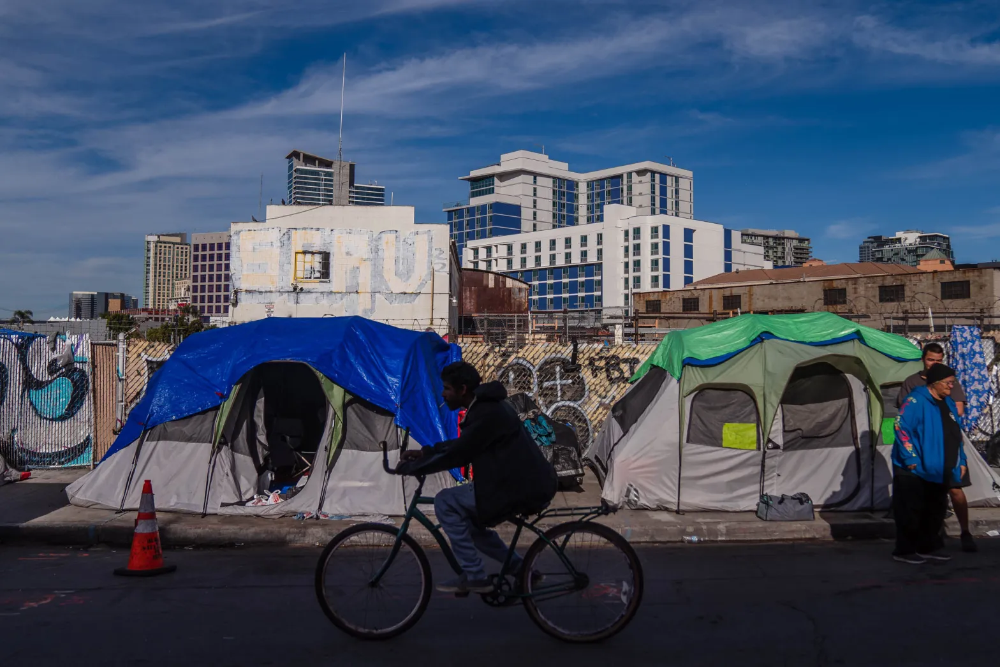

ESSENTIAL QUESTIONHow did WWII change what American life looked like, and who got left out of the new prosperity?
In the summer of 1947, a Navy veteran named Bill Levitt started bulldozing potato fields on Long Island, New York. His crews finished houses so quickly that one home could be completed about every 16 minutes. By 1951, more than 17,000 nearly identical homes stood where farmland used to be. Levittown became a symbol of a new American dream: a house, a car, a lawn, and a family.
In 1947, Bill Levitt began building houses on old potato fields in New York. His crews worked very fast. One house could be finished about every 16 minutes. By 1951, more than 17,000 homes stood there. Levittown became a symbol of the new American dream.
But that dream had limits. The postwar boom created jobs, suburbs, highways, colleges, and new consumer goods. It also left many Black families, Mexican American workers, and poor communities outside the door. This lesson is about both stories at once: the boom and the people blocked from it.
But the dream was not open to everyone. The postwar boom created jobs, suburbs, highways, colleges, and new products. It also left many Black families, Mexican American workers, and poor communities out. This lesson tells both parts of the story.
◆
THE SUBURBAN BOOM: HOUSES, CARS, AND BABIES

Levittown suburban street, ca. 1950. Wikimedia Commons / Library of Congress.
When World War II ended in 1945, millions of soldiers came home to a country ready to spend. Factories that had built tanks and planes now made refrigerators, cars, and washing machines. Wages rose, and many families wanted a private home after years of war, rationing, and separation.
When World War II ended in 1945, millions of soldiers came home. Factories stopped making weapons and started making cars, refrigerators, and washing machines. Wages rose. Many families wanted a home of their own.
The federal government helped many veterans buy homes through the GI BillA law that gave veterans money for college and home loans.. Banks offered cheap mortgages. Builders used assembly-line methods to create whole neighborhoods quickly. This growth of communities outside city centers was called suburbanizationThe fast growth of neighborhoods outside cities..
The GI Bill helped many veterans pay for college and homes. Banks gave cheap loans. Builders made houses quickly. New neighborhoods grew outside cities. This was called suburbanization.
The suburbs grew because cars and highways made them possible. The Interstate Highway System, launched in 1956, connected suburbs to city jobs. A family could live miles away from downtown and still drive to work, stores, schools, and church.
Cars and highways helped suburbs grow. The Interstate Highway System began in 1956. It connected suburbs to city jobs. Families could live far from downtown and still drive everywhere.
At the same time, the baby boomThe big rise in births after World War II. reshaped the country. Between 1946 and 1964, about 76 million babies were born in the United States. Schools, toy companies, television programs, and suburbs all grew around young families.
The baby boom also changed America. From 1946 to 1964, about 76 million babies were born. Schools, toys, television, and suburbs grew around children and families.
The postwar boom also shifted work. More Americans moved into offices, stores, hospitals, banks, and schools. This was the service economyAn economy where most jobs provide services, not goods.. For many families, a desk job became a new path into the middle class.
Work changed too. More people worked in offices, stores, hospitals, banks, and schools. This was the service economy. For many families, office work became a path to the middle class.
DID YOU KNOW
A 1950s kitchen was part of the postwar sales pitch.
A new suburban house did not just sell walls and a roof. It sold a whole future: kitchen appliances, a lawn, a car in the driveway, and children riding bikes on quiet streets. The strange part is how quickly that image became treated like the "normal" American life, even though millions of Americans were blocked from buying into it.
FAST FACTS
16MINUTES PER HOUSE
17KLEVITTOWN HOMES
76MBABY BOOM BIRTHS
41KINTERSTATE MILES
4.5MBRACERO CONTRACTS
◆
THE MARSHALL PLAN: REBUILDING EUROPE AND PROTECTING AMERICA

Marshall Plan aid in Europe, ca. 1948-1952. U.S. National Archives / Wikimedia Commons.
While Americans bought houses and cars, much of Europe was still recovering from war. Cities, railroads, farms, ports, and factories had been damaged or destroyed. In 1947, Secretary of State George Marshall proposed a huge American plan to rebuild Western Europe.
While Americans bought homes and cars, Europe was still damaged by war. Cities, farms, railroads, ports, and factories needed repair. In 1947, George Marshall proposed a plan to help rebuild Western Europe.
The Marshall PlanA U.S. plan that sent aid to rebuild Western Europe. sent more than $13 billion to 16 Western European countries between 1948 and 1952. The money helped rebuild roads, ports, factories, and farms. By 1952, the countries that received aid had passed their prewar economic levels.
The Marshall Plan sent more than $13 billion to Western Europe. Sixteen countries received aid. The money helped rebuild roads, ports, factories, and farms. By 1952, their economies were growing again.
The plan was generous, but it was also strategic. American leaders feared that poverty and chaos could help communism spread. The Soviet Union already controlled much of Eastern Europe. The United States used prosperity as a Cold War weapon.
The plan helped people, but it also served U.S. goals. American leaders feared communism would spread if Europe stayed poor. The Soviet Union controlled much of Eastern Europe. The U.S. used money and trade to fight communism.
The Marshall Plan also helped American businesses. European countries used aid money to buy American wheat, steel, machines, and equipment. That kept U.S. factories busy as the country shifted from war production to peacetime production.
The plan also helped American businesses. European countries bought American wheat, steel, machines, and equipment. U.S. factories stayed busy after the war ended.
"Our policy is directed not against any country or doctrine but against hunger, poverty, desperation, and chaos."
George C. Marshall, address at Harvard University, June 5, 1947
Marshall argued that the United States could protect democracy by fighting the conditions that made people desperate.
◆
LEFT OUT: WHO THE BOOM LEFT BEHIND
The postwar boom was real, but it was not shared equally. The same GI Bill that helped many white veterans buy homes and attend college often failed Black veterans. Banks denied loans. Colleges refused admission. Federal programs were run through local systems that already practiced segregation.
The postwar boom was real, but it was not fair. The GI Bill helped many white veterans buy homes and go to college. Black veterans often did not get the same help. Banks denied loans. Colleges refused them. Segregation shaped the system.

HOLC redlining map, ca. 1936-1940. National Archives / Wikimedia Commons.
RedliningWhen banks denied loans in Black or immigrant neighborhoods. made housing inequality worse. Banks and government agencies marked Black and immigrant neighborhoods as risky. Families in those areas could not get fair mortgages. Meanwhile, many new suburbs refused to sell homes to Black families.
Redlining made housing unfair. Banks marked Black and immigrant neighborhoods as risky. Families there could not get fair loans. Many suburbs also refused to sell homes to Black families.
William Levitt refused to sell Levittown homes to Black buyers. He argued that white buyers would leave if Black families moved in. Federal lending agencies often supported these restrictions. Homeownership became one of the greatest wealth-building tools in American history, but many Black families were locked out.
William Levitt refused to sell homes to Black buyers. He said white buyers would leave. Federal lending agencies often supported these rules. Homeownership built wealth for many white families, but Black families were blocked.

Bracero Program workers in California fields, ca. 1956. Library of Congress.
Mexican workers also helped build postwar prosperity without sharing fully in it. The Bracero ProgramA program that brought Mexican workers to U.S. farms. brought millions of Mexican workers to U.S. farms between 1942 and 1964. They picked crops that fed American families, but many lived in poor camps, earned low wages, and lacked union protection.
Mexican workers also helped the boom grow. The Bracero Program brought Mexican workers to U.S. farms. They picked crops that fed American families. Many lived in poor camps, earned low wages, and had few protections.
President Harry Truman took some steps toward equality. In 1948, he desegregated the military with Executive Order 9981. He also supported fair employment rules. But Congress blocked many civil rights proposals. The gap between postwar promises and postwar reality helped fuel the Civil Rights Movement.
President Truman took some steps toward equality. In 1948, he ended segregation in the military. He also supported fair hiring rules. But Congress blocked many civil rights plans. These failures helped lead to the Civil Rights Movement.
ART SPOTLIGHT

Levittown or postwar suburban housing advertisement, 1950s. Wikimedia Commons.
The artwork in postwar housing ads often made the suburb look like a finished dream: clean lawn, smiling family, bright sky, no conflict anywhere. What the ad did not show was just as important. The perfect house could be sold as a national symbol while the rules quietly decided who was allowed to buy it.
◆
CALIFORNIA RISES: HIGHWAYS, UNIVERSITIES, AND FARMS

University of California campus life, postwar era. Wikimedia Commons.
California became one of the clearest examples of postwar growth. Defense jobs, Navy bases, aerospace companies, ports, farms, highways, and universities pulled millions of people west. The state promised sunshine, jobs, college, and a future.
California grew quickly after the war. Defense jobs, Navy bases, farms, ports, highways, and colleges pulled people west. The state promised jobs, sunshine, college, and a future.
Public universities grew because more students could attend college. The GI Bill helped veterans pay tuition. California also invested in public higher education. College became a ladder into the service economy and the middle class.
Public colleges grew. The GI Bill helped veterans pay for school. California also spent money on public higher education. College became a path to better jobs.

California freeway expansion, 1950s. Wikimedia Commons.

California agriculture and farm labor, postwar era. Wikimedia Commons / Library of Congress.
Highways changed the shape of California life. They connected suburbs to jobs and made car culture central to daily routines. But they also cut through older neighborhoods and made life harder for people who could not afford cars or suburban homes.
Highways changed California life. They connected suburbs to jobs. Cars became part of daily life. But highways also cut through older neighborhoods. They hurt people who could not afford cars or suburban homes.
California farms also depended on low-paid labor. Bracero workers and other Mexican and Mexican American laborers harvested crops that made California agriculture powerful. Their work fed the boom, even when the boom did not fully include them.
California farms depended on low-paid workers. Bracero workers and Mexican American workers harvested crops. Their work helped California grow. But they often did not share fully in the boom.
◆
PRIMARY SOURCE MOMENT
"Our policy is directed not against any country or doctrine but against hunger, poverty, desperation, and chaos."
George C. Marshall, address at Harvard University, June 5, 1947
Marshall believed the United States could protect democracy by rebuilding economies before desperation took over.
QUESTION 1: What problems does Marshall name as dangers to free societies?
QUESTION 2: How does this source connect to the essential question about who received help after World War II?
THEN AND NOW
THE POSTWAR BOOM BUILT THE MODERN AMERICAN DREAM, BUT IT ALSO BUILT THE HOUSING GAP WE STILL LIVE WITH.
1950S
A postwar suburb promised space, safety, and a path to wealth.
TODAY

Housing access is still one of the biggest dividing lines in American life.
The first image sells a dream with neat lawns and matching roofs. The second image reminds us that the price of entering that dream did not stay low for everyone.